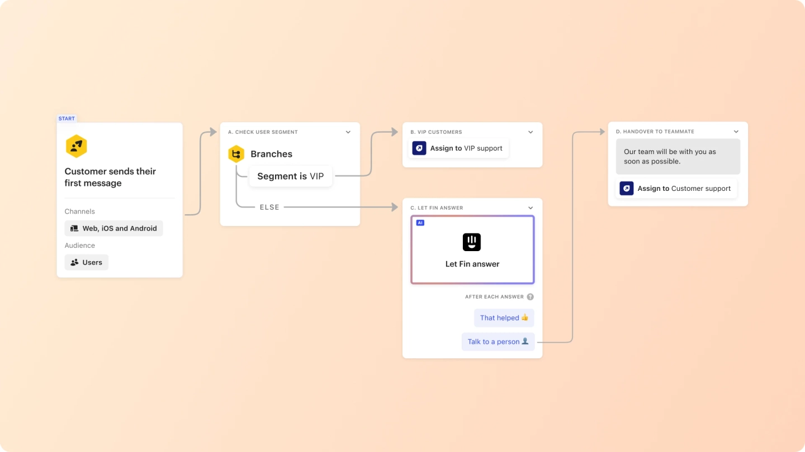

Meet Fin, a breakthrough AI chatbot from Intercom
that really works.
Using the most sophisticated AI language models, Fin automatically solves customer issues with safe, accurate,
conversational answers based solely on your support content.
A natural language bot, Fin understands complex queries, asks clarifying questions, and fully converses with your customers – dramatically reducing support volume, unlocking 24/7 support, and delivering CSAT-boosting service.
Fin works natively with Intercom’s help desk to create a connected experience for your teammates and customers. Fin works with Intercom’s inbox, ticketing, messenger, reporting, and more – right out of the box. Say goodbye to fragmented support solutions and hello to the AI-enhanced, all-in-one customer service platform..
Fin can answer questions using multiple sources – including Intercom articles, Zendesk help center, any public URL, PDFs, or text-based snippets.
Fin can answer questions using multiple sources – including Intercom articles, Zendesk help center, any public URL, PDFs, or text-based snippets.
Fin can answer questions using multiple sources – including Intercom articles, Zendesk help center, any public URL, PDFs, or text-based snippets.
Fin can answer questions using multiple sources – including Intercom articles, Zendesk help center, any public URL, PDFs, or text-based snippets.
Monitor Fin’s conversations in the inbox, improve Fin’s answers with suggestions, and create Snippets (short, text-based answers) to continuously elevate Fin’s performance.
Review Fin’s performance for resolutions, CSAT, and more with pre-built and custom reports..
Fin can effortlessly keep conversations going wherever your customers are—Intercom messenger, WhatsApp, SMS, and more.
Fin automatically detects a customer’s language and resolves issues in 43 languages.
Combine Fin with Workflows’ triggers, conditions, and actions to create personalized and connected customer experiences that would be impossible with standalone AI bots. For example – handoff conversations from Fin to your support team when a customer visits a webpage or clicks a specific element on your pricing page, or have Fin pick up the conversation if it’s outside business hours.
